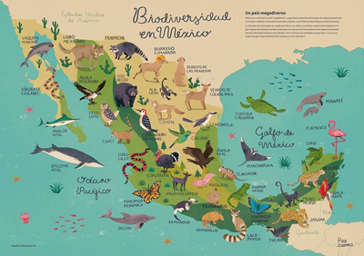

La gran divesidad de animales que tenemos en Mexico
Mexico
Mexico es uno de los paises con mayor biodiversidad del mundo. Gracias a sus distintos climas y ecosistemas, alberga una gran variedad de especies, mucha de ellas unicas del pais.
Algunos ejemplos son
juguar
ajolote
Vaquita marina
anguil real
monos, venados, tortugas, lobos marinos.

Mexico posee una gran variedad de ecosistemas que existe en su territorio. Esra riqueza natural es importante para el equilibrio del medio ambiente y debe protegerse para evitar la extincion de muchas especies. la diversidad animal es muy importante porque ayuda a mantener el equilibrio de los ecosistemas. sin embargo, algunas especies estan en peligro debido a la contaminacion, la caza ilegal, la deforestacion y el cambio climatico.
Muchas de estas especies son endemicas, lo que significa que solo viven en mexico.